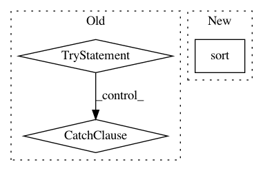

72f3f5bf50ed2d91cdcfbe2cf47120a2df8883cd,nilmtk/elecmeter.py,ElecMeter,_get_stat_from_cache_or_compute,#ElecMeter#Any#Any#Any#,415
Before Change
if loader_kwargs.get("preprocessing") is None:
cached_stat = self.get_cached_stat(key_for_cached_stat)
for section in sections:
try:
row = cached_stat.loc[section.start]
except KeyError:
sections_to_compute.append(section)
else:
end_time = row["end"]
if end_time == section.end:
usable_sections_from_cache = (
usable_sections_from_cache.append(row))
else:
sections_to_compute.append(section)
else:
sections_to_compute = sections
if not sections_to_compute:
After Change
// Get sections_to_compute
sections_to_compute = set(sections) - set(results_obj.timeframes())
sections_to_compute = list(sections_to_compute)
sections_to_compute.sort()
else:
sections_to_compute = sections
if not results_obj._data.empty:
In pattern: SUPERPATTERN
Frequency: 3
Non-data size: 3
Instances
Project Name: nilmtk/nilmtk
Commit Name: 72f3f5bf50ed2d91cdcfbe2cf47120a2df8883cd
Time: 2014-11-26
Author: jack-list@xlk.org.uk
File Name: nilmtk/elecmeter.py
Class Name: ElecMeter
Method Name: _get_stat_from_cache_or_compute
Project Name: deeptools/HiCExplorer
Commit Name: daf0cbe9f0047ae7070491ab98479461b31981d2
Time: 2019-07-21
Author: wolffj@informatik.uni-freiburg.de
File Name: hicexplorer/chicSignificantInteractions.py
Class Name:
Method Name: main
Project Name: nipy/dipy
Commit Name: 61714567a844ab36f14385061b60ae1a08def1b5
Time: 2015-11-08
Author: garyfallidis@gmail.com
File Name: dipy/reconst/dsi.py
Class Name:
Method Name: create_qtable